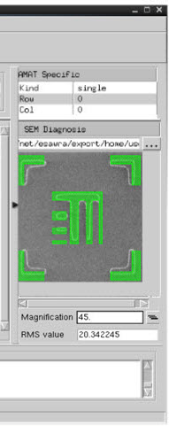

You can load
SEM images in (.tiff) format and compare them to the design clip
generated from CMi. You can also attach this image to a marker and
the SEM image path is added to the output Marker points in the CSV
file. This assists in diagnosis and verification of the validity
of the model against what is printed on the wafer.
Prerequisites
Invoked
Calibre WORKbench and the Calibre Metrology Interface
A
mask layout with markers (see “Marker Operations” for information on markers)
A
SEM image
Run
the Calibre Metrology Interface and generate GDS or OASIS reference
layout clips (Refer to “CMi Workflow Overview” for an overview of this process)
Procedure
- In the Sites table of CMi,
select a marker, then click the Browse button in the SEM Diagnosis
area to load a SEM image. A SEM image appears in the SEM Diagnosis display
area.
Figure 1. CMi With SEM Loaded
- In the SEM Diagnosis area,
you can change the magnification value to run the alignment process
with an updated magnification value by pressing the Realignment
button. This button can be found to the right of the Magnification
field. You can also view the Root Mean Square (RMS) value of the
alignment between any given SEM image and its respective design
polygons and contour specified around the measurement point.
- Select File > Export
Markers > CSV. This generates
an output CSV file that attaches the SEM image path to the marker
object in the CSV file.